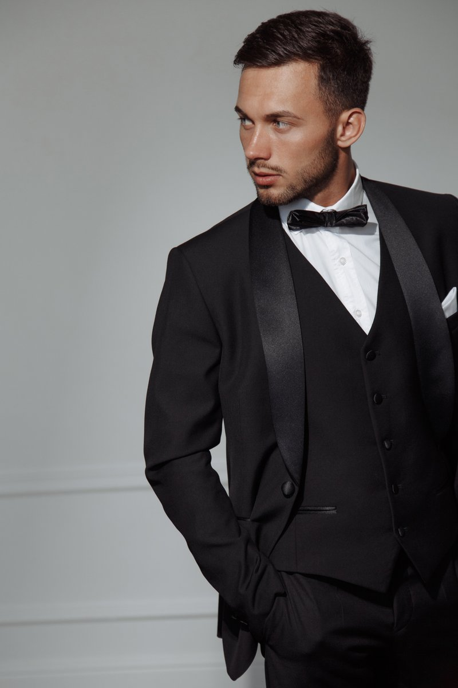
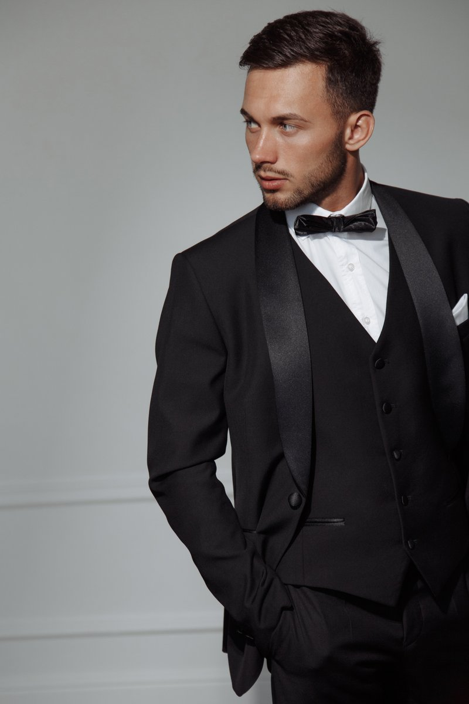

Модель • Актер • AI-Creator
David
Pyankov
Привет. Я Давид. Объединяю живой актерский опыт с цифровыми технологиями, создавая визуал, который цепляет.
Связаться со мной
Модель • Актер • AI-Creator
Привет. Я Давид. Объединяю живой актерский опыт с цифровыми технологиями, создавая визуал, который цепляет.
Связаться со мной
Давид Пьянков, 27 лет, Москва. 4 года в киноиндустрии: сериалы, фильм «Кракен», реалити, реклама. Начинал не с площадки — стройка, общепит, водитель, менеджер. Сменил десяток профессий, прежде чем понял: моё — это камера и креатив. Сейчас соединяю актёрство с технологиями: работаю на камеру и создаю AI-контент. Умею быть лицом проекта и сделать так, чтобы это продавалось. Ищу проекты, где нужен человек без страха перед камерой и с головой на плечах.
Изучаю генерацию фото с помощью ИИ и вижу за этим будущее индустрии. Моя основная специализация актера и модели помогает мне тренировать насмотренность: я понимаю свет, композицию и то, какой визуал действительно нужен клиенту. Это позволяет мне создавать нейро-контент профессионального уровня.
ШОУРИЛ И AI-ПРОЕКТЫФриланс | 2022 — настоящее время
Фриланс | настоящее время
Проектная работа | 2 года
Актерская игра, моделинг, fashion-фотография, стилизация, работа со светом и позированием.
Генерация AI-фотосессий, создание AI-графики, вайб-кодинг (vibe coding), промпт-инжиниринг.
Навык работы с AI инструментами: Midjourney, Runway, Nano Banana, Kling AI, ChatGPT, Claude, Gemini, Perplexity AI, HeyGen, Cursor.
Рост: 172 см
Размер одежды: M-L
Размер обуви: 42
Цвет глаз: Голубой
Цвет волос: Русый
Владение автомобилем: нет.
Водительские права: есть (категория B).
Стаж: более 5 лет.
Высокая эмпатия, широкая насмотренность, креативность, стрессоустойчивость и готовность к нестандартным задачам. Желание обучаться и прокачивать свои навыки.
Актерское портфолио, моделинг, личные съемки.


 

Видеопортфолио.


Важно! Это лишь малая часть портфолио, оно регулярно обновляется.